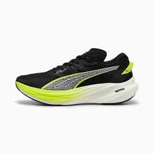
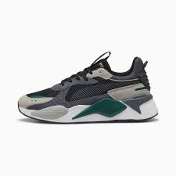
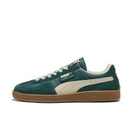
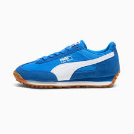

Popular Colorways : PUMA White-PUMA Black / For All Time Red-PUMA White
Product Description :
The Puma Speedcat is born for the streets. Premium leather and bold design fuse motorsport heritage with modern style. Painted and debossed branding provides unmistakeable attitude underfoot,
while an OrthoLite® sockliner ensures all-day comfort for those always on the go.
Puma Deviate Nitro3

Price: £150 apprx
Popular Colorways : PUMA Black-Yellow Alert / PUMA Black-PUMA White
Product Description :
The Puma Deviate Nitro 3 engineered for neutral pronators, these running shoes feature cutting-edge PWRPLATE technology for enhanced stability and energy transfer,
while NITRO™ foam ensures superior cushioning and a lightweight, snappy ride. The engineered mesh upper, made with at least 20% recycled materials, provides breathability and comfort. With a 39mm/29mm stack height and a 10mm heel-to-toe drop,
they deliver a smooth, effortless running experience for everyday training.
Puma Rs Heritage

Price: £90 apprx
Popular Colorways : Sedate Gray-Sunny Yellow / PUMA Black-Orange Glo
Product Description :
The Puma Rs Heritage sneakers are built for life on the move. A mesh upper keeps you comfortable mile after mile while the retro-inspired design turns heads.
Take on the city streets in style. The journey starts now.
Puma Superteams

Price: £85 apprx
Popular Colorways : Dark Myrtle-Warm White-PUMA Gold / PUMA Black-PUMA White
Product Description :
The Puma Superteams is a retro-inspired sneaker
made for handball goalkeepers, but adds some 90s inspiration with a mix of materials like mesh, leather upper and suede PUMA Formstrip in addition to the shoe having a
stand-out tongue.
Puma Easyrider

Price: £80 apprx
Popular Colorways : Hyperlink Blue-Clyde Royal-PUMA White / PUMA Red-PUMA White
Product Description :
The Puma Easyrider trainers have a lightweight textile and sturdy suede upper, paired with a textile collar and lining. Underfoot, the streamlined foam midsole offers a slim yet cushioned ride above the old-school Gum rubber tread.
Finished off with Gold foil PUMA branding and the iconic Formstrip.